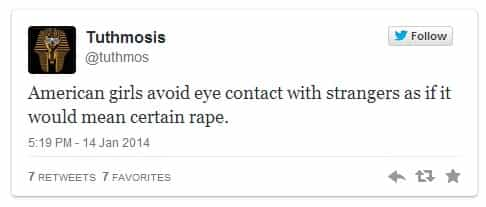

< < < Back
9 Old-School Ways For A Woman To Become More Attractive To Men – Return Of Kings

Most American girls today have no idea how to be attractive. Apart from whatever god-given physical beauty nature has seen fit to grant them, they have zero understanding of the countless intangibles that can make them more desirable. Like a lottery winner, they draw on their windfall good-looks account until they drain it, without ever having made a single investment. More times than not, they spend their riches away prematurely, on obesity, body mutilations, and bad haircuts. That’s to say nothing about their insufferable personalities. It’s really only through the grace of the unquenchable male sex-drive that today’s Western woman still gets invited to anything.
And, when you have magazines and Facebook friends and talk-show hosts telling you’re beautiful no matter what, why would you do anything to preserve or enhance your looks? When you have a hoard of thirsty guys tripping over each other to pay your rent, why would you do anything to optimize your personality? It’s a great race to the bottom.
It’s only when you encounter the rare gem—or travel abroad—that you realize it doesn’t have to be this way. American girls used to be top-shelf sweethearts, the Cadillacs of the female showroom. That’s what #BackToTheKitchen is all about: restoring the American broad to her former glory.
Ladies, these are 9 ways to help us get that ball rolling:
1. Make eye contact.
The typical American girl is programmed to avoid eye contact like she’s in the room with Medusa. A combination of the years of being told that every man is John Wayne Gacy, and a growing inability to deal with even the most basic social interactions, are my best guesses for why this is. The trend makes them cold, obnoxious, and unattractive. Warm eye contact with men doesn’t automatically mean you want to sleep with them, it means you’re a well-adjusted adult worth knowing.

2. Say thank you.
The good old-fashioned thank you is a dying art. I’ve talked about how only like one in five girls I take out on dates ever thanks me for the drinks I buy. But, there are other occasions for saying thank you. The waiter fills your water? Thank you. The guy in front of you does that little flip with the door so you don’t have to fully open it yourself? Thank you.
3. Grow your hair out.
I’ve spoken at length (no pun intended) on the importance of not having short hair for communicating physical and mental stability—a fact no honest man, with experience around short-haired women, will dispute. But, even if you don’t have a hideous pixie cut, grow your hair out to the middle of the back or lower. Men will notice.
4. Learn how to sew or knit, and how to iron while you’re at it.
I have a friend whose ex-girlfriend knitted all of her Christmas gifts last year. In a brilliant and subtle tactic to impress the man who had recently broken up with her, she emailed him a picture of the finished product. In dismay, he showed me the picture. You could read the second thoughts in his face over leaving that on the table. Domesticity works.
5. Dress cute all the time.
Walking out of the house in your sweats and Uggs may feel comfortable, but it telegraphs your I-don’t-give-a-fuck-ness. Unfortunately for you, I-don’t-give-a-fuck-ness isn’t attractive to men. Spend 10 fewer minutes on Facebook or Instagram and reinvest that time into putting together cute ensembles. In the words of a Ukrainian girl who used to do exactly that, you “could run into man of dreams on way to throw trash [sic].”
6. Act like his satisfaction in bed is guaranteed.
From my on-going discussions with my male friends, it seems like upwards of 80 percent of girls today get sex totally wrong. Some go way too prude—lifeless mummies who act like they’re posing for a Civil War-era photograph—and do none of the work. Others go way over-the-top slutty, talking about how much they “love sucking cock” or directing traffic to everything she “likes,” because she’s developed all kinds of hacks for her genitals through overuse. Instead, split the difference. You can never go wrong by focusing on pleasing your man.
7. Reward your man for being manly.
One of the best compliments I ever got from a woman was something that seemed silly in the moment. “You’re so brave,” she said as I volunteered to go first to speak in a front of a big crowd. It was only in retrospect that I appreciated receiving what’s probably one of the original Paleolithic compliments for a man. Dudes today are pussies because the incentives to be manly have plummeted in recent years. The next time the guy you’re with fixes, lifts, or grills something, acknowledge the hell out of it.
8. Text or call back promptly. Show interest and be vulnerable.
My buddies and I have a rule of thumb: if she texts back within 20 minutes the first time, she’s girlfriend material. Girls spend so much time trying to find angles and show disinterest that they strangle the infant relationship in its crib. Be responsive. Give compliments. Show enthusiasm. It’s attractive, and addictive.
9. Make him that sandwich after all.
The phrase may be comically played out, but there’s very few things more effective than making food for a man. This is no coincidence. It signals several things at once. It shows your dominion over the domestic sphere. It displays your kindness and generosity. It exhibits your nurturing instinct. Between the Internet, something like 10 different food channels, countless apps, and modern supermarkets, there’s simply no excuse for not knowing how to feed a man without having to tip someone else at some point during the transaction.
Are you on Twitter? Discuss this post using the hashtag #BackToTheKitchen.
Read More: American Girls Have No Game


{kind=link}
{kind=link}
{kind=link}
{kind=link}